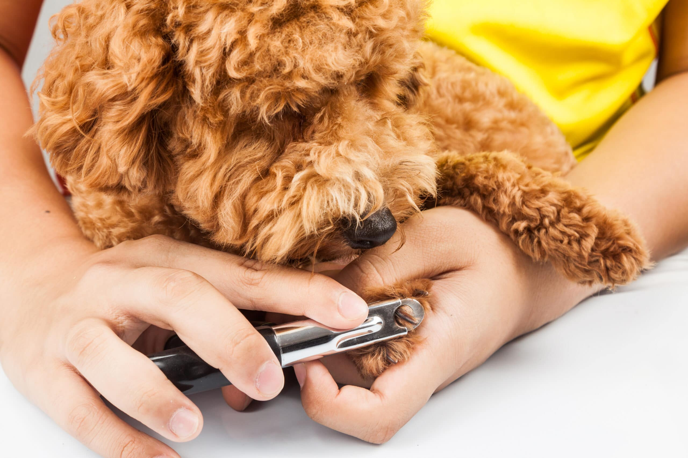

Higiene
Corte de uñas: Cómo hacerlo sin miedo y por qué es vital
El sonido de las uñas haciendo "clic-clic" en el piso no es solo molesto; es una señal de que tu mascota necesita atención. Las uñas largas pueden causar dolor, afectar la postura al caminar y provocar lesiones articulares a largo plazo.
1. Anatomía de la uña: Cuidado con el "hiponiquio"
El mayor miedo al cortar las uñas es causar sangrado. A diferencia de las nuestras, las uñas de perros y gatos tienen un vaso sanguíneo y un nervio en su interior (el hiponiquio o "la carne viva").
En uñas claras, se ve como una línea rosada. En uñas negras, es más difícil de ver y se debe cortar muy de a poco. Si cortas esta parte, dolerá y sangrará. Tener polvo estíptico o maicena a mano ayuda a detener el sangrado si ocurre un accidente.
2. La técnica correcta
Para perder el miedo, lo mejor es ver cómo lo hace un profesional. Aquí te dejamos un video explicativo:
3. La regla de la frecuencia
Si tu perro camina mucho sobre asfalto, las uñas se liman solas. Si camina sobre pasto o es muy sedentario, necesitará cortes cada 2 o 3 semanas.
En gatos, especialmente los de interior (indoor), el corte de puntas cada 2 semanas evita que se enganchen en alfombras o muebles y facilita el uso del rascador.